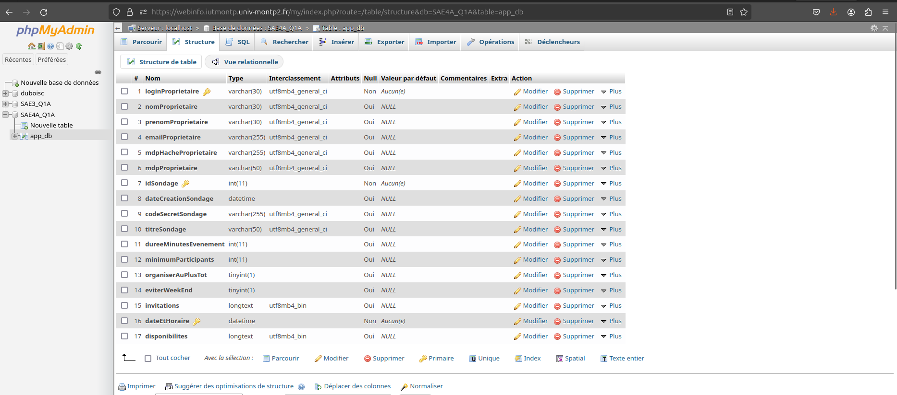

Projet de correction d'une application web de sondage :
Noodle - Plateforme de sondage
Équipe : 4 développeurs
Durée : 6 semaines (méthodologie Agile) - En cours
Description : Application web pour des votes démocratiques en ligne.
Type de projet : Universitaire
Contraintes : Temps, collaboration en équipe, respect des spécifications, qualité de développement, maintenabilité du code, teste des solutions.
Technologies utilisées : MVC, bases de données sécurisées, HTML, BULMA, PHP, gestion des sessions utilisateurs, JS, JSON.
Contribution personnelle :
- Diagnostiquer la solution web présentée.
- Refonte de la base de données.
- Travail et gestion d'équipe.
Compétences développées :
- Maîtrise du pattern MVC.
- Bonnes pratiques de sécurité.
- Débusquer les problèmes de sécurités.
- Comprendre et analyser les défaut logiciel.
- Communication non violente (CNV).
- lisibilité du code.
- Déterminer une spécification du code.
- Utilisation de Casey Delobel pour la préservation des données.
Analyse critique de la solution existante
Dans le cadre de mon analyse, j’ai réalisé un rapport détaillé sur l’état actuel du code de la solution, mettant en lumière plusieurs problèmes critiques. Parmi ceux-ci figurent des failles de sécurité majeures : certaines actions à haut niveau de privilège ne vérifient pas systématiquement les droits d’administrateur, exposant le système à des abus. De plus, l’absence d’échappement du HTML ouvre la porte à des injections SQL, à des modifications non autorisées des pages, voire à des comportements indésirables, compromettant ainsi l’intégrité et la fiabilité de l’application.
Sur le plan de la maintenabilité, le code souffre d’une dépendance excessive entre ses composants : chaque élément du site repose sur un autre de manière rigide, rendant toute évolution ou correction complexe sans remanier des parties existantes. Cette architecture viole le principe ouvert/fermé, limitant la capacité à étendre les fonctionnalités sans risquer de régressions ou de cascades de modifications.
Enfin, l’homogénéité des données est mise à mal par une redondance importante dans la base de données, source potentielle d’incohérences et de difficultés de synchronisation. Ces anomalies compliquent la gestion des informations et augmentent les risques d’erreurs lors des mises à jour.
J’ai activement contribué à la rédaction du rapport d’analyse de ces problèmes, en proposant une évaluation claire des risques et des pistes d’amélioration pour chaque point soulevé. L’objectif est de fournir une base solide pour des corrections ciblées, afin de renforcer la sécurité, la maintenabilité et la cohérence du système sur le long terme.
Voir le rapport réalisé.
Refonte de la base de données
La base de données initiale se limitait à une unique table, centralisant à la fois les informations des utilisateurs, leurs disponibilités et les sondages. Cette conception monolithique posait précisément les problèmes que nous avions identifiés dans le compte rendu précédent : redondance des données, manque de maintenabilité et risques accrus d’incohérences.

Pour y remédier, j’ai utilisé Casey Delobel, un outil dédié à la modélisation de bases de données, afin de restructurer le schéma. L’objectif était double : définir des clés pertinentes pour garantir l’intégrité des données, et séparer les entités logiquement distinctes (utilisateurs, disponibilités, sondages) en tables dédiées. Cette refonte préserve l’accessibilité des données tout en éliminant les dépendances problématiques et en améliorant la clarté et l’évolutivité du système.
Collaboration et gestion de projet : Leçons apprises
Ce projet universitaire en équipe de 4 personnes, réalisé en seulement 6 semaines, est une véritable école de la collaboration et de la gestion de projet. Travailler dans un cadre aussi contraint m'a appris des leçons précieuses sur l'importance de l'organisation collective et de la flexibilité individuelle.
Dès le début, nous avons établi une répartition claire des tâches en fonction des compétences et des affinités de chacun. Cette organisation initiale nous permet d'éviter les chevauchements de travail et les oublis. Nous mettons en place des points réguliers (tous les 2-3 jours) pour faire le point sur l'avancement, partager nos difficultés et ajuster notre stratégie si nécessaire. Ces réunions courtes mais efficaces nous permettent de maintenir une communication fluide et de garder tout le monde aligné sur les objectifs. J'ai particulièrement apprécié cette dynamique où chacun pouvait exprimer ses idées et ses préoccupations, créant ainsi un environnement de travail collaboratif et bienveillant.
La gestion du temps est notre plus grand défi. Avec seulement 6 semaines pour livrer un projet amélioré complet, chaque minute comptait. J' apprends à prioriser les tâches en fonction de leur importance et de leur urgence. Nous utilisons une approche inspirée des méthodologies agiles, en découpant le projet en petites étapes réalisables. Cette méthode nous permet de :
- Identifier les éléments critiques à réaliser en premier
- Éviter la procrastination en fixant des échéances intermédiaires
- Garder une vision claire de l'avancement global
- Réajuster nos priorités en cours de route si nécessaire
Enfin, ce projet m'enseigne l'importance de l'adaptabilité. Malgré une planification minutieuse, nous devons faire face à des contraintes techniques imprévues et des retards dans certaines tâches. Plutôt que de nous décourager, nous avons appris à :
- Réévaluer nos objectifs en cours de route
- Trouver des solutions créatives pour contourner les obstacles
- Accepter les compromis quand nécessaire, sans sacrifier la qualité
- Rester flexibles dans nos méthodes de travail
Cette expérience intense me montré que le succès d'un projet ne dépend pas seulement des compétences techniques, mais aussi de la capacité à travailler ensemble efficacement, à gérer son temps intelligemment et à s'adapter aux imprévus. Ces compétences en gestion de projet et en travail d'équipe sont devenues pour moi aussi importantes que les compétences techniques purement informatiques, et je suis convaincu qu'elles me seront précieuses tout au long de ma carrière.